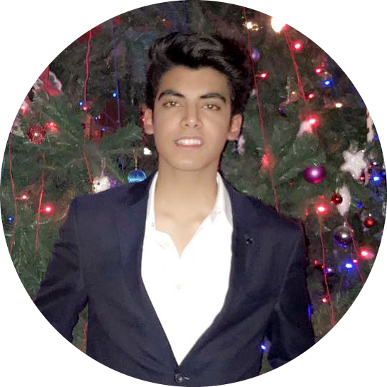

About Me

Hi! I am Kaartik and I am pursuing a dual major in Computer Science and Statistics at University of Toronto📍
As a techophile, I have always been interested and invested in fields of Software Engineering, Data Science and Machine Learning 🖥️. Entering my University I was exposed to arsenal of resources and an ocean of knowledge opportunities.
I have been grateful enough to have these opportunities in my life, and have used them to best of my abilities to become a skilled 🤹 techophile.
Right now, I am working as a Software Developer 🧑💻 at University of Cambridge and a Research Assistant at Dept. Of Computer Science at University of Toronto.
Personally, I am a humble person from humble beginnings. I always believe in mutual growth and coexistence. I am always open to learn, collaborate and help in any shape or form. So feel free to reach out to me!🤝